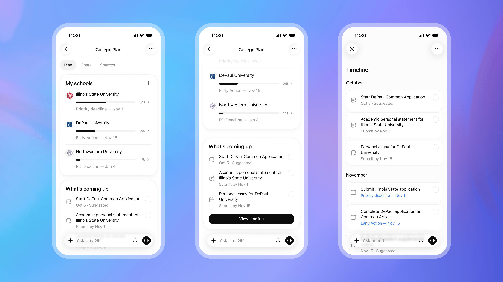

7 октября OpenAI объявила, что в ChatGPT for Teens — режиме для пользователей младше 18 — появится College Planner. Идея простая: у абитуриента обычно несколько вузов в списке, и по каждому своя простыня требований. Планировщик собирает требования, сроки подачи, задачи и шаги по финансовой помощи в один общий план с таймлайном: можно возвращаться, отмечать выполненное и по ходу спрашивать у ChatGPT, что значит то или иное требование и с чего начать. Функция выйдет «скоро», сначала — американские школьники 10–12 классов, планирующие четырёхлетние университеты.
Компания заодно открыла раннюю статистику подростковой версии. Всего у ChatGPT 1,2 млрд пользователей; среди подростков, получивших доступ к ChatGPT for Teens, учебно-ориентированных сообщений в среднем стало примерно на 2,7 млн больше, чем у тех, кому доступ ещё не открыли. За одну неделю почти 1,2 млн подростков использовали визуализации для разбора тем по математике и науке, более 180 тысяч — Study Mode с пошаговыми подсказками. Самое любопытное про меру зависимости: в среднем подростки проводят в ChatGPT меньше 15 минут в день, больше трёх часов подряд — меньше 2%, а почти в половине диалогов с напоминанием о перерыве подросток реально делал паузу или завершал разговор в течение пяти минут. Для сравнения OpenAI приводит публичные оценки среднего времени подростков в соцсетях — около пяти часов.
В приложении для iOS появится пакетная съёмка: несколько фотографий подряд загружаются одним PDF — удобно для конспектов и разворотов учебника. Также ChatGPT научится делать карточки для заучивания (flashcards) прямо из заметок пользователя, с викторинами. В том же анонсе OpenAI рассказала о совете подростков при компании (teen AI council) и поддержке программ Бостонской детской больницы.
Анонс вышел буквально через несколько дней после доклада исследовательской организации Common Sense Media: её Institute Youth AI Safety назвал ChatGPT for Teens «неприемлемым риском» — за то, что бот «по-прежнему делает домашку за детей» и не всегда уведомляет родителей, когда должен. OpenAI отвечает на это своими же цифрами времени в приложении и подчёркивает, что среди подростков с сессиями дольше трёх часов более 80% хотя бы в одном запросе занимались учёбой. Насколько цифры уложат спор о безопасности — вопрос к следующим независимым проверкам.